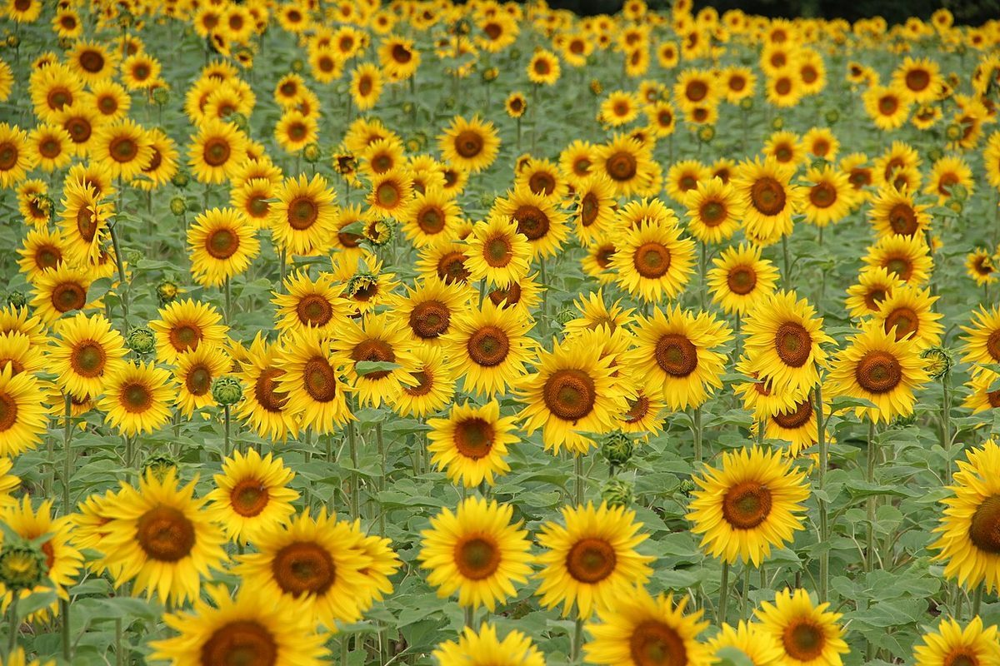
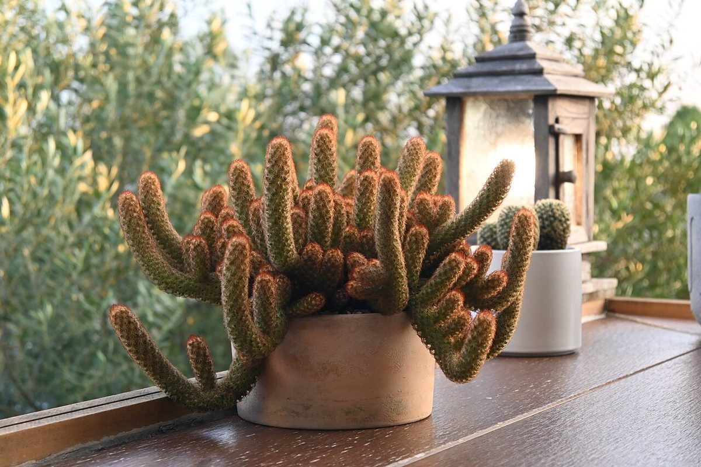

店のこと
店のこと
お店について確認できているのは、所在地・電話番号・Instagramのアカウントです。
「想像してみる」の部分は制作側が想像して書いたもので、お店の実際の様子・考え・メニューとは関係がありません。
確認できていること
- 店名は「Noppo」、業種はカフェ
- 所在地は佐賀県伊万里市大坪町甲2828-6(〒848-0021)
- 電話番号は 070-1355-1973
- Instagramは @noppo_imari
- 営業時間・定休日・メニュー・価格・ご予約・駐車場は準備中

想像してみる
上へ上へ、のび方を並べる
制作側の連想で、お店の理念・由来とは無関係です。「のっぽ」から、まっすぐ上へ向かうものをいくつか並べてみました。


